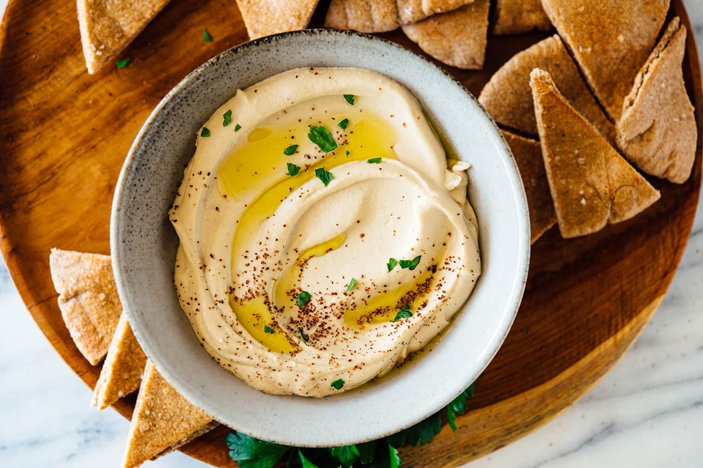
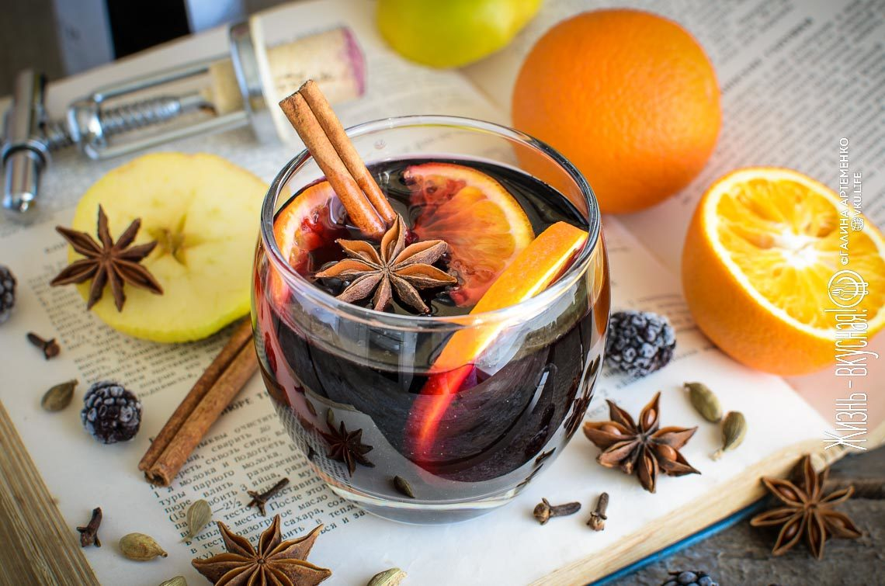

Любимые блюда
Хумус

Ингредиенты
- Нут - 250г.
- Чеснок - 2 зубчика
- Лимонный сок - 3 ст. л.
- Зира - 1/3 ч. л.
- Тахини - 2 ст. л.
- Оливковое масло - 3 ст. л.
- Соль - 1/2 ч.л.
Способ приготовления
- Нут промыть под проточной водой и замочить на ночь.
- Варить нут в подсоленой воде до мягкости.
- Слить воду, в которой варился нут, в отдельную емкость. К нуту добавить тахини, раздавленные зубчики чеснока, лимонный сок, оливковое масло, специи.
- В чаше блендера взбить все до однородной массы, регулируя густоту отваром.
Подавать к столу, сбрызнув оливковым маслом.
Осенний суп

Ингредиенты
- Красное вино - 1 бутылка
- Апельсин - 1 шт.
- Яблоко - 1 шт.
- Мед - 3 ст. л.
- Корица - 1 палочка
- Кардамон - 5 зерен
- Гвоздика - 5 зерен
- Бадьян - 3 звездочки
- Мускатный орех - щепотка
Способ приготовления
- Перелить вино в кастрюлю и поставить на медленный огонь.
- Нарезать яблоко и апельсин полукольцами.
- Доравить нарезанные фрукты и специи в вино и дать повариться 10 минут.
- Добавить мед и помешивать до полного растворения.
Подавать сразу по готовности.